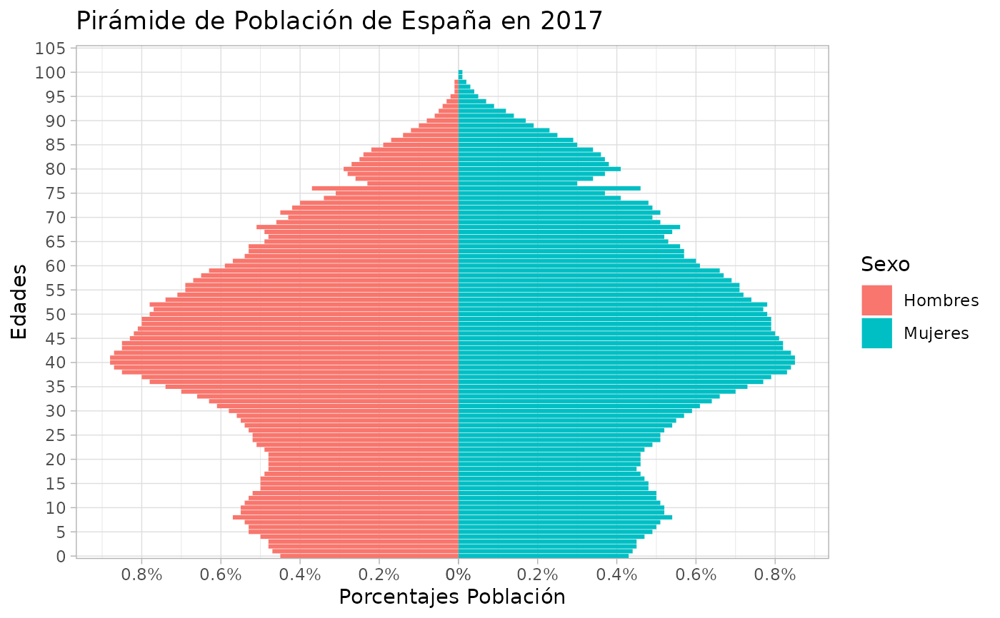

DemBas_piramide_ggplot2.RdFunción para crear pirámides poblacionales con ggplot2
DemBas_piramide_ggplot2(
datosPiramide,
porcentajes = TRUE,
etiquetas = FALSE,
etiquetas.size = 4,
UsaCaso = FALSE,
etiq.hombre = "Hombre",
etiq.mujer = "Mujer",
colorear = "Sexo",
colores = NULL
)ggplot2 graphics
dfej02a <- DemBas_read_px2(system.file("examples/9663.px", package = "DemographyBasic"))
head(dfej02a)
#> Periodo Sexo Edad.simple value
#> 1 1 de julio de 2018 Ambos sexos Total 46733038
#> 2 1 de enero de 2018 Ambos sexos Total 46658447
#> 3 1 de julio de 2017 Ambos sexos Total 46532869
#> 4 1 de enero de 2017 Ambos sexos Total 46527039
#> 5 1 de julio de 2016 Ambos sexos Total 46449874
#> 6 1 de enero de 2016 Ambos sexos Total 46440099
tp1 = dfej02a %>%
dplyr::filter(Periodo=="1 de enero de 2017",Edad.simple=="Total") %>%
# hay dos espacios entre "de" y "2017"
dplyr::select("Sexo","value")
PV = round(tp1$value[tp1$Sexo=="Hombres"]/tp1$value[tp1$Sexo=="Ambos sexos"],
4)*100
#### España a 1 de enero de 2017.
x1 = as.character(DemBas_extrae_codigo_provincia(dfej02a$Edad.simple))
x1n = as.numeric(x1)
#> Warning: NAs introduced by coercion
x1ngr = DemBas_agrupar_variable(x1n,metodo=2,final=100)
dfej02a$EdadGrupos = x1ngr
tp3 = dfej02a %>%
dplyr::filter( Periodo=="1 de enero de 2017",
!(Edad.simple %in% c("100 y más años","Total"))) %>%
dplyr::group_by(Sexo,EdadGrupos) %>%
dplyr::summarise(Poblacion = round(sum(value,na.rm=T),0), .groups = "keep")
dfPir2017 = dfej02a %>%
dplyr::filter( Periodo=="1 de enero de 2017",
!(Sexo=="Ambos sexos"),
!(Edad.simple %in% c("100 y más años","Total"))) %>%
dplyr::select(Edadchar=Edad.simple,
Sexo,
Poblacion = value)
dfPir2017$Edad = DemBas_extrae_codigo_provincia(dfPir2017$Edadchar)
dfPir2017$Edad = factor(dfPir2017$Edad,levels =unique(dfPir2017$Edad))
dfPir2017$Poblacion[is.na(dfPir2017$Poblacion)] = 0
head(dfPir2017)
#> Edadchar Sexo Poblacion Edad
#> 1 0 años Hombres 210605.9 0
#> 2 0 años Mujeres 199294.2 0
#> 3 1 año Hombres 218041.9 1
#> 4 1 año Mujeres 205462.2 1
#> 5 2 años Hombres 223029.6 2
#> 6 2 años Mujeres 209112.7 2
DemBas_piramide_ggplot2(dfPir2017,
#etiquetas = T,etiquetas.size = 2,
etiq.hombre = "Hombres",etiq.mujer = "Mujeres") +
labs(title = "Pirámide de Población de España en 2017") +
scale_x_discrete(
# si la variable edad fuera numeric debería usarse scale_x_continuous
breaks = seq(0,105,by=5),
labels = paste0(as.character(seq(0,105,by=5)), ""))
